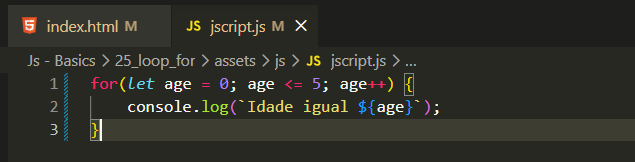
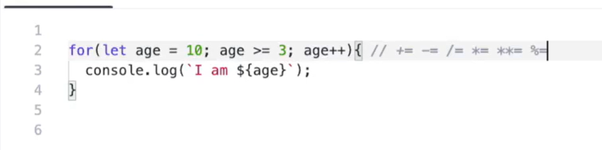

Loop For
Intro
Nas aulas anteriores quando precisamos utilizar um comando muitas vezes, geralmente estavamos utilizando uma funcao para nao precisar repetir o codigo. Agora iremos ver o for (laco).
Nas aulas anteriores quando precisamos utilizar um comando muitas vezes, geralmente estavamos utilizando uma funcao para nao precisar repetir o codigo. Agora iremos ver o for (laco).
Com o for conseguimos criar repetições de um código até que sua condição seja atendida.
Utilizamos o for da seguinte forma:
for(let age = 1; age <= 5; age++){
console.log(`Eu tenho ${age}`);
}

Além de incrementar, também podemos subtrair (-), multiplicar (*), começar por outro valor, fazer de forma decrescente, entre outras possibilidades.
